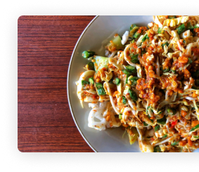
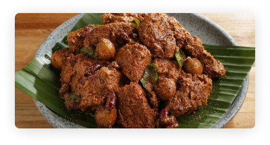
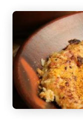
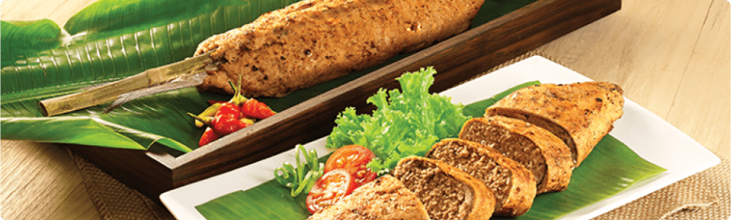

Buat masakan
nusantara
khas
daerahmu.
Melestarikan masakan tradisional
merupakan kewajiban kita
Paling populer:



Paling populer
Mulai memasak
Lestarikan
kuliner
nusantara
Menurut https://bisnis.com/ kita memiliki lebih dari 5.300 makanan asli dari Indonesia. Kita sebagai bangsa Indonesia wajib melestarikan agar kelak anak dan cucu kita memiliki budaya Indonesia

Mengapa kita harus
melestarikan kuliner
nusantara ?
kuliner tradisional merupakan warisan budaya. Tidak hanya pakaian adat, kebiasaan istiadat, hingga benda-benda peninggalan bersejarah saja yang bisa menjadi warisan budaya, tapi kuliner tradisional juga merupakan warisan budaya yang turun temurun